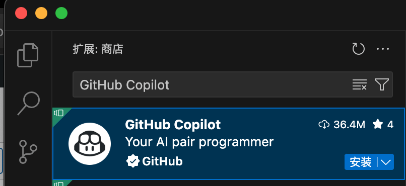
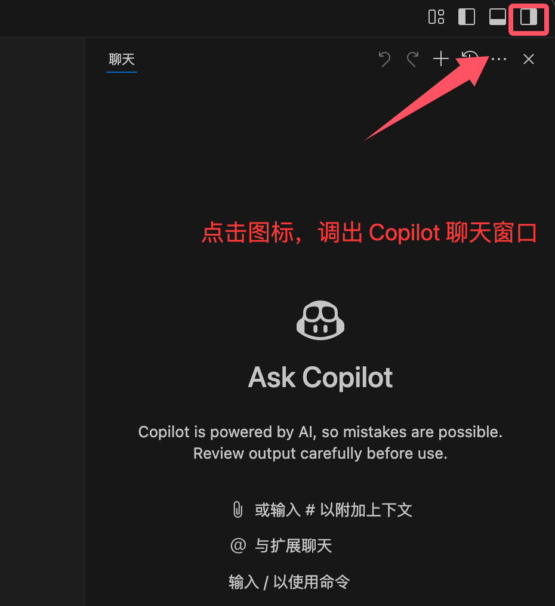
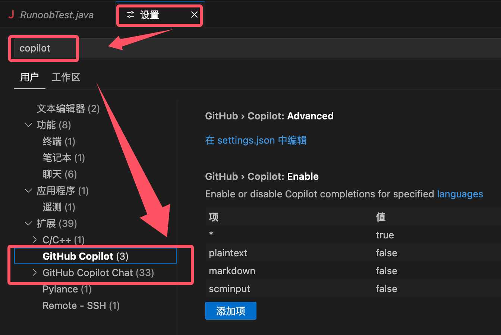
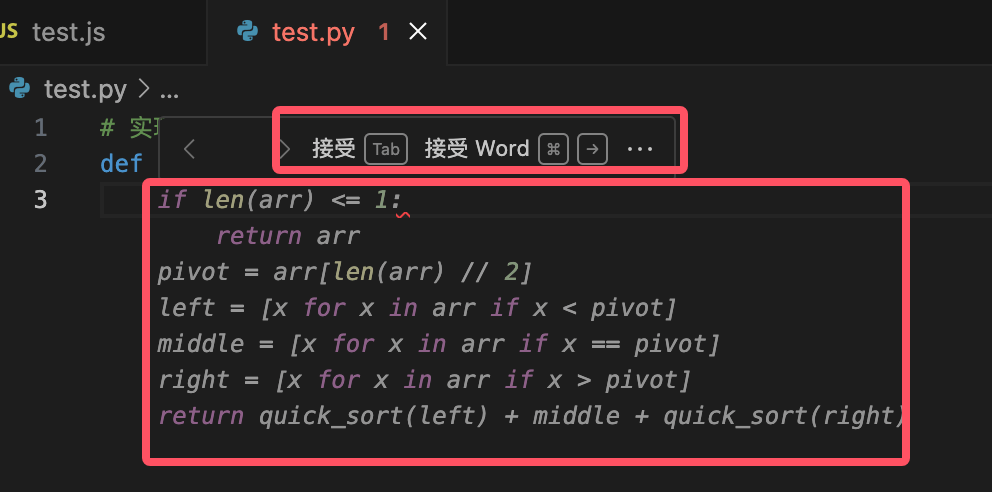
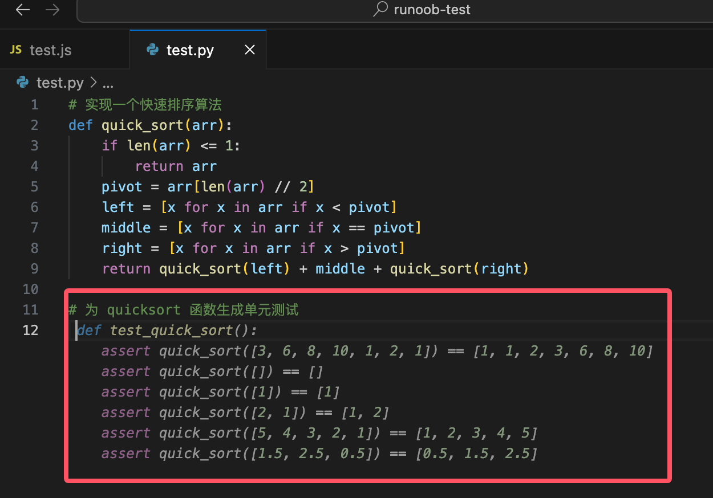
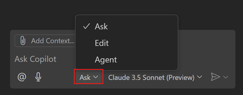

VS Code GitHub Copilot
GitHub Copilot es un asistente de codificación con IA desarrollado conjuntamente por GitHub y OpenAI. Puede autocompletar código, generar funciones, optimizar la lógica e incluso escribir módulos de código completos basándose en el contexto, ayudando a los desarrolladores a codificar de manera más eficiente.
GitHub Copilot está integrado en múltiples IDE como VS Code, Visual Studio y JetBrains, haciendo que sientas que tienes a un compañero experimentado que te asiste en todo momento mientras escribes código.

Funciones principales
Autocompletado de código
GitHub Copilot puede proporcionar sugerencias de código en tiempo real según el contexto de tu código y los comentarios. Puede:
- Completar líneas completas de código
- Generar funciones completas
- Generar código a partir de comentarios descriptivos
Explicación de código
Copilot puede ayudarte a comprender código que no te resulta familiar:
- Explicar la funcionalidad de segmentos de código complejos
- Ofrecer sugerencias de optimización de código
- Identificar problemas potenciales
Soporte multilingüe
Admite casi todos los lenguajes de programación principales, incluyendo:
- JavaScript/TypeScript
- Python
- Java
- C++
- Go
- Ruby, etc.
Instalación y configuración
Pasos de instalación
Requisitos previos
-
VS Code está instalado correctamente; se recomienda la versión
1.116+o superior. Esta versión incluye Copilot de forma nativa, sin necesidad de instalar complementos manualmente. -
Cuenta de GitHub, y se requiere activar la suscripción de GitHub Copilot (puede ser la versión personal, de equipo o empresarial).
Instalar la extensión (para VS Code 1.115 y versiones anteriores)
-
Abre VS Code y accede al mercado de extensiones (Extensions Marketplace).
-
Busca
GitHub Copilot。 -
Haz clic en
安装(Install)Instalar.
Una vez completada la instalación, haz clic en el pequeño icono de la esquina superior derecha para abrir la ventana de chat de Copilot:

También puedes hacer clic en el icono de la esquina inferior derecha:

Iniciar sesión en la cuenta de GitHub
-
Una vez completada la instalación, VS Code te pedirá que inicies sesión con tu cuenta de GitHub.
-
Haz clic en
Sign in to GitHub, el navegador te redirigirá a la página de autorización de GitHub; después de autorizar, volverá automáticamente a VS Code.
Activar GitHub Copilot
-
En VS Code, presiona
Ctrl + Shift + P, escribeCopilot: Enable。 -
Después de confirmar la activación, podrás comenzar a usarlo.
Después de la instalación, abre la configuración de VS Code y busca Copilot. Aquí podemos ajustar en la configuración de VS Code:
- Método de activación de sugerencias (automático o manual)
- Posición donde se muestran las sugerencias
- Configuración de preferencia de idioma

Consejos de uso
Autocompletado inteligente
Cuando empiezas a escribir código, GitHub Copilot ofrece sugerencias automáticamente, por ejemplo:
function fetchData(url) {
// Copilot 会自动给出一个基于 fetch API 的实现
}

Podemos presionar la tecla Tab para aceptar la sugerencia.
Si hay varias sugerencias, presionaCtrl + ]oCtrl + [para cambiar entre ellas.
-
Si no deseas usar la sugerencia, presionaEscpara cancelarla.
Generar código a partir de comentarios
Escribe directamente comentarios y Copilot se encargará de implementarlos:
# Implementar un algoritmo de ordenamiento rápido

Ejemplo
def quick_sort(arr):
if len(arr) <= 1:
return arr
pivot = arr[len(arr) // 2]
left = [x for x in arr if x < pivot]
middle = [x for x in arr if x == pivot]
right = [x for x in arr if x > pivot]
return quick_sort(left) + middle + quick_sort(right)
Generar casos de prueba
Incluso puedes escribir directamente comentarios para que Copilot genere las pruebas por ti:
// 为 quicksort 函数生成单元测试

Además, podemos hacer clic derecho con el ratón en el editor, seleccionar Copilot y acceder a las funciones que necesitemos:

Descripción de los atajos de teclado:
| Atajo de teclado | Descripción de la función |
|---|---|
Tab |
Aceptar sugerencia |
Esc |
Ignorar sugerencia |
Ctrl + ] |
Ver la siguiente sugerencia |
Ctrl + [ |
Ver la sugerencia anterior |
Ctrl + Enter |
Abrir el panel de Copilot |
Ctrl + Shift + P |
Activar/desactivar Copilot |
Usar la función de chat en VS Code
Con la función de chat en Visual Studio Code, puedes hacer preguntas en lenguaje natural sobre el repositorio de código o realizar ediciones en varios archivos dentro del proyecto. La función de chat puede funcionar en diferentes modos según tus necesidades, desde hacer preguntas, realizar ediciones en varios archivos, hasta iniciar flujos de trabajo de codificación basados en agentes, lo que satisface todas tus necesidades.
Puedes usar la función de chat de VS Code en los siguientes escenarios:
- Entender código: por ejemplo, "¿Explica cómo funciona este middleware de autenticación?"
- Depurar problemas: por ejemplo, "¿Por qué obtengo una referencia nula en este bucle?"
- Obtener sugerencias de código: por ejemplo, "¿Muestra cómo implementar un árbol binario de búsqueda en Python?"
- Optimizar el rendimiento: por ejemplo, "¿Ayúdame a mejorar la eficiencia de esta consulta de base de datos?"
- Aprender mejores prácticas: por ejemplo, "¿Qué métodos se recomiendan para manejar errores en funciones asíncronas?"
- Obtener consejos de VS Code: por ejemplo, "¿Cómo personalizar los atajos de teclado?"
Consejo: Si aún no tienes una suscripción a Copilot, puedes usar Copilot de forma gratuita registrándote en el plan gratuito de Copilot, con un número limitado de completaciones e interacciones de chat por mes.
Modo de chat
Según tus necesidades específicas, puedes elegir diferentes modos de chat:
| Modo | Descripción | Escenario |
|---|---|---|
| Preguntar (Ask) | Haz preguntas sobre el repositorio de código o conceptos técnicos. | Disponible en la versión estable o de vista previa. Entender cómo funciona un fragmento de código, hacer una lluvia de ideas sobre diseños de software o explorar nuevas tecnologías. |
| Editar (Edit) | Realiza ediciones en varios archivos dentro del repositorio de código. | Disponible en la versión estable o de vista previa. Aplicar ediciones de código directamente en el proyecto para implementar nuevas funciones, corregir errores o refactorizar código. |
| Agente (Agent) | Inicia flujos de trabajo de codificación basados en agentes. | Disponible en la versión estable o de vista previa. Con una guía mínima, implementar de forma autónoma nuevas funciones o requisitos avanzados del proyecto, utilizar herramientas para ejecutar tareas especializadas e iterar para resolver problemas cuando surjan. |
Puedes cambiar entre los diferentes modos de chat usando el menú desplegable de modos en la vista de chat.

Otras extensiones